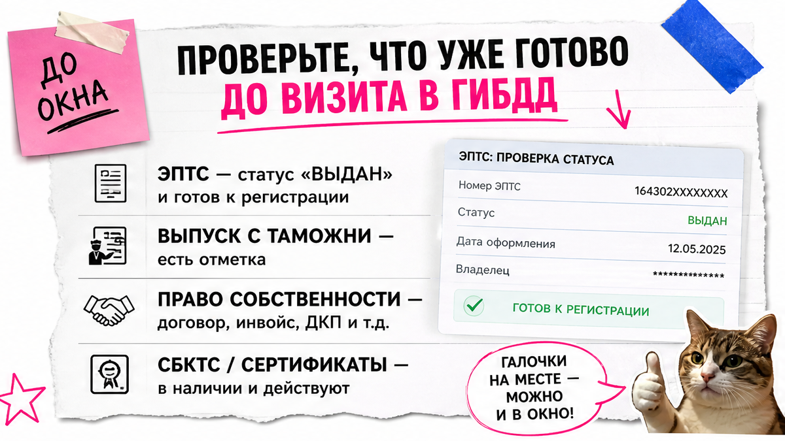
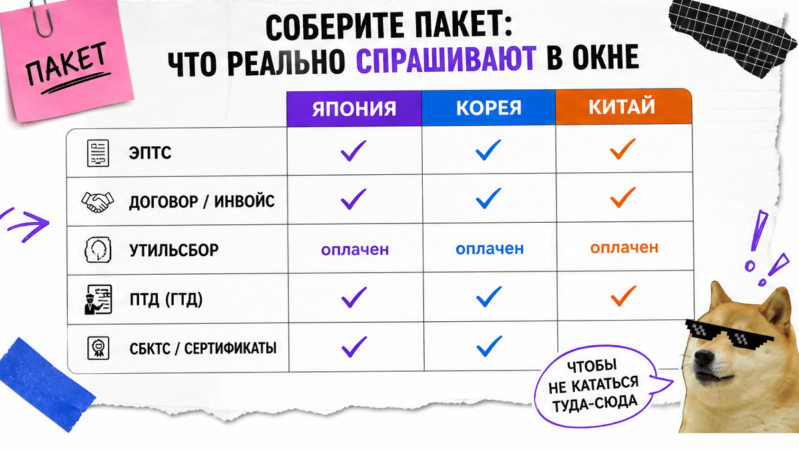
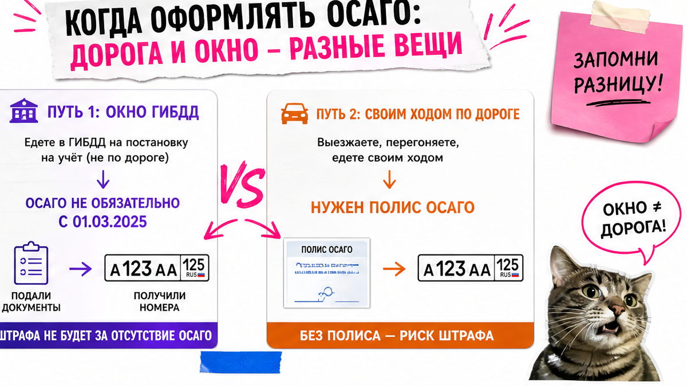

Машина уже растаможена, а в ГАИ ехать страшно: непонятно, что брать с собой, не сгорит ли слот из-за статуса ЭПТС и не оштрафуют ли за просрочку 10 дней. Типичная история – как у Андрея из Хабаровска: менеджер сказал "езжай", а в окне паспорт ещё не готов к учёту. Ниже – чек-лист постановки на учёт авто из Японии, Кореи и Китая в 2026 после выпуска с таможни: пакет → Госуслуги → СТС и номера с первого визита.
TL;DR / Быстрый инсайт: Таможня закрыта – это ещё не финиш. Финиш – день, когда инспектор отдал номера и вы сверили СТС у окна. До записи проверьте статус ЭПТС и идентификатор на табличках. С 01.03.2025 ОСАГО для окна регистрации не обязательно; полис нужен, если едете своим ходом. Цель: СТС и госномера в срок 10 дней без повторного визита.
Мы в Авто-Сейлс во Владивостоке видим одну ошибку: человек путает "документы для ввоза" и "документы для учёта". СБКТС, ЭПТС и ЭРА к этому моменту уже должны быть закрыты ранее – здесь не разбираем их пошагово. Фокус: что взять в ГИБДД после выпуска и как не уехать с отказом. На практике цепочка короткая: проверка ЭПТС → пакет → запись → осмотр → СТС.

Боль новичка простая: непонятно, что уже лежит в системах. Если ехать "на авось", слот сгорает, как у Андрея: VIN сошёлся на площадке, а статус электронного паспорта для учёта ещё не подошёл.
ЭПТС – электронный паспорт транспортного средства (цифровая карточка авто вместо бумажного ПТС). СБКТС – свидетельство о безопасности конструкции; его оформляют до ЭПТС, и к учёту оно уже должно быть в цепочке. Утильсбор должен отражаться в данных, которые видит ГИБДД. Таможенное подтверждение выпуска (ПТД, ТПО или ДТ) держите под рукой.
Делать: собрать папку и скрины статуса до записи. Не делать: ехать в день, когда менеджер устно сказал "ЭПТС готов", без вашей проверки.

Для постановки на учет авто из японии, Китая или Кореи после выпуска базовый комплект обычно такой: паспорт владельца, документ о праве собственности (ДКП или инвойс с переводом при необходимости), ЭПТС в статусе для регистрации, подтверждение таможенного выпуска и отражение утильсбора.
Типичная ошибка на местах: в МРЭО устно просят "договор с японцем", хотя опираются на ЭПТС и таможенные сведения. Если требуют лишнее – просите письменный мотивированный отказ, а не бегайте за бумагами "на слух".
| Страна ввоза | На что смотреть перед учётом | Типичный риск на осмотре |
|---|---|---|
| Япония | VIN или номер кузова/frame = выписка ЭПТС | Нестандартный идентификатор, свет RHD, тонировка переда |
| Корея | Совпадение VIN, перевод инвойса/ДКП при необходимости | Расхождение маркировки и данных в заявлении |
| Китай | Читаемый VIN, согласованность ЭПТС и таможни | Опечатки в заявлении, "не подгрузился" статус ЭПТС |
Делать: везти базовый комплект и сверку идентификатора. Не делать: соглашаться на бесконечный список "принесите ещё" без письменной мотивации.

Тут важный момент, который путают гайды 2026. С 1 марта 2025 ОСАГО убрали из обязательного пакета для самой регистрации в ГИБДД: машину поставят и без полиса. Но если едете своим ходом, полис нужен для дороги, а не для окна. Штраф за управление без ОСАГО – ч.2 ст.12.37 КоАП, ориентир 800 ₽.
Например, едете на эвакуаторе – для окна полис можно не брать. Едете сами – оформите ОСАГО по VIN без номеров заранее, а госномер внесите после выдачи СТС.
Схема логистики до МРЭО:
Своим ходом → ОСАГО по VIN до выезда → осмотр → СТС → внести номер в полис
Эвакуатор → полис для окна не обязателен → осмотр → СТС
Делать: решить маршрут до записи и только потом думать про страховку. Не делать: откладывать учёт "пока не куплю полис", если едете на эвакуаторе – так вы сами сжигаете 10 дней.
Срок подачи заявления – 10 дней со дня выпуска в обращение, временного ввоза свыше года или приобретения прав владельца (Правила регистрации ТС). Штраф за просрочку для граждан – ч.1 ст.19.22 КоАП, ориентир 1 500–2 000 ₽. Точную точку отсчёта берите из своих таможенных и договорных дат.
По госпошлинам на 2026 ориентир Consultant: бумажное СТС – 1 500 ₽, пластиковое нового поколения – 4 500 ₽; знаки – отдельно. В коммерческих статьях цифры расходятся – сверяйте сумму в форме Госуслуг перед оплатой.
Делать: записаться сразу после проверки ЭПТС. Не делать: тянуть "до выходных", если до края срока осталось два рабочих дня.
Если авто ещё в пути – варианты и расчёт сопровождения в каталоге avto-sales125.ru; детали после выпуска – в Telegram @avtosales125.
Отказы на площадке чаще всего из-за статуса ЭПТС, несовпадения идентификатора, света праворульки или тонировки переда. Для японцев особенно проверьте таблички VIN/frame при дневном свете и протрите их до визита.
Делать: короткая репетиция осмотра за день до слота. Не делать: ехать с "потом объясню инспектору" по фарам или статусу паспорта.
Цель дня: уехать с СТС и номерами. Возьмите паспорт, право собственности, доступ к ЭПТС, таможенное подтверждение, квитанцию госпошлины и заявление. Если ехали своим ходом – полис на дорогу.
Критерий результата: в руках СТС и госномера; в ЭПТС и заявлении совпадают VIN/кузов и данные владельца; дата учёта укладывается в 10 дней с момента, когда возникла обязанность зарегистрировать авто.
Делать: читать СТС у окна, как чек в магазине. Не делать: уходить "разберёмся дома".
Нужен подбор из Азии – откройте каталог Авто-Сейлс. Форм на странице нет: расчёты живут в каталоге и переписке.
Материал проверен: редакция Авто-Сейлс (эксперты по авто под заказ из Японии, Кореи и Китая).
Достоверность данных: срок 10 дней – Правила регистрации ТС / 283-ФЗ; ОСАГО с 01.03.2025 – Renins и Prosto; госпошлины СТС – Consultant (НК РФ); пакет после выпуска – материалы 2026 и форумы (Drom, МРЭО). Проверка источников: 2026-09-30.
Для окна регистрации с 01.03.2025 полис не обязателен. Если едете своим ходом – оформите ОСАГО по VIN до выезда, иначе риск штрафа за управление без страховки.
Базовый комплект один: ЭПТС, право собственности, таможенный выпуск, утильсбор, паспорт. У японцев чаще ловят VIN/frame и свет RHD; у Китая и Кореи – опечатки и переводы. Сверяйте идентификатор до записи.
К моменту учёта требования по вашей схеме ввоза уже должны быть закрыты ранее. Если ЭПТС не в статусе для регистрации – сначала закройте этот разрыв, а не занимайте слот в ГИБДД.
Ориентир – 10 дней со дня выпуска в обращение, временного ввоза свыше года или приобретения прав владельца. Берите дату из документов и сразу бронируйте слот на Госуслугах.
Покажите базовый комплект (ЭПТС, таможня, право собственности). Если настаивают – просите письменный мотивированный отказ и исправляйте только указанный пункт.
Ориентир Consultant: бумажное СТС 1 500 ₽, пластиковое нового поколения 4 500 ₽; знаки отдельно. Перед оплатой сверьте сумму в форме Госуслуг в день платежа.
Возьмите письменный отказ, закройте конкретный пункт (статус ЭПТС, идентификатор, свет, комплект) и запишитесь снова – без догадок "на слух".